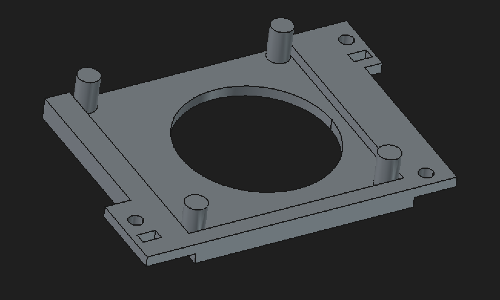
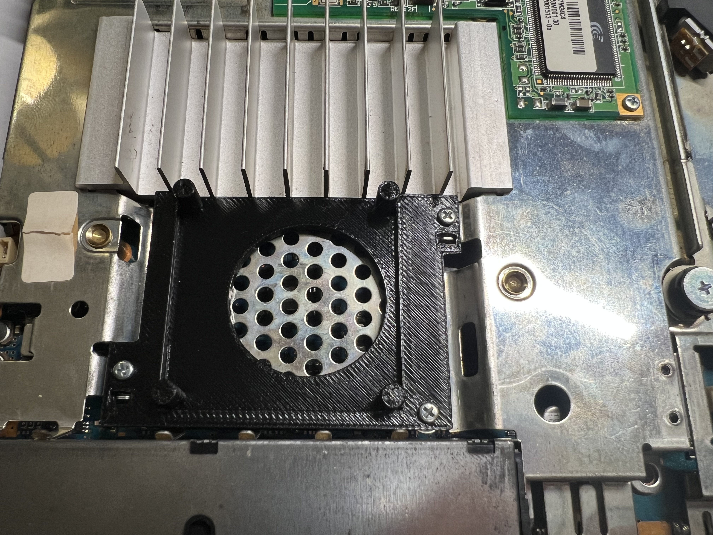
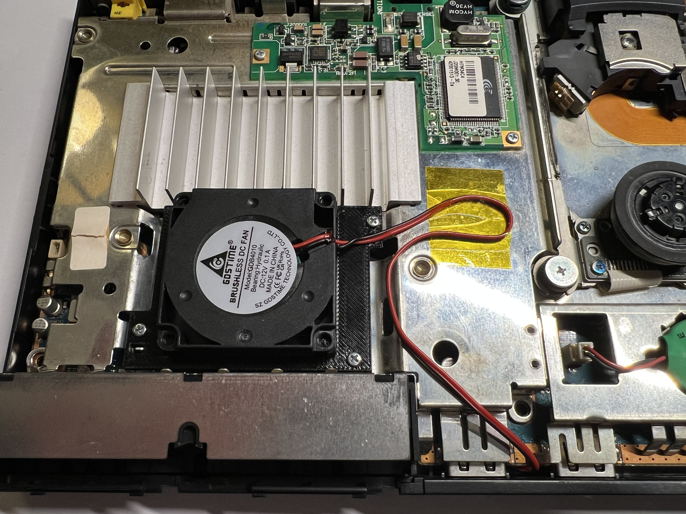
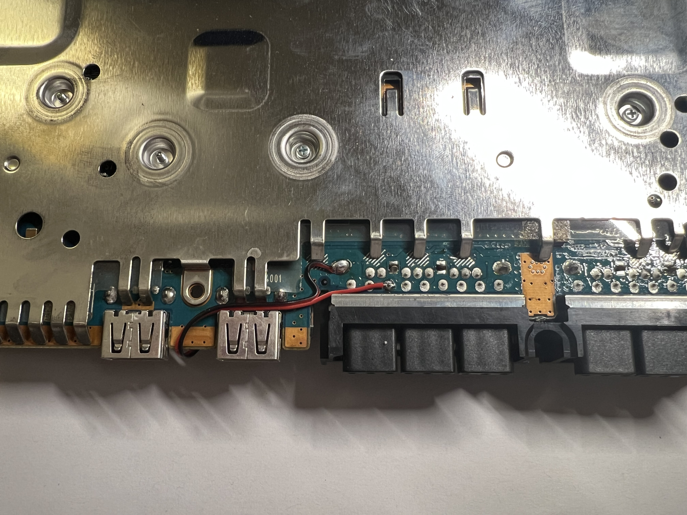

The fan present in the PS2 Slim 70000 series models is a proprietary 8.5V 0.36A fan manufactured by Delta electronics. Model is BFB0412HHA. These fans are no longer manufactured and in many aging PS2s can become extremely noisy. The original fan is roughly the same size as a 4020 blower fan, but housed in a wider enclosure. "Replacement fans" are widely available online but in almost all cases are used fans from old PS2s, and have a high probability of being just as noisy as the fan you are trying to replace. I wanted to design a mount which would allow me to replace this fan with a standard 4020. Here is a 3D render of the mount:

and here is it installed in place of the original fan, 3D printed in PETG for additional heat resistance:

Now for the fan I chose. It's difficult to find a high quality 4020 8.5V fan, so I opted for a 12V 0.1A hydraulic fan from GDSTIME, a relatively inexpensive but well regarded brand on aliexpress:

The fan fits very snugly:

As you can see in the photo, the fan is not running towards the old fan header. This is for a few reasons. The original fan is a 3 pin, and our replacement is a 2 pin. If we connected our new fan to the old fan header, we would be forced to leave the rpm pin disconnected. The PS2 will assume there is something wrong with the fan and force it to full speed even when the PS2 is connected to power but turned off. I don't mind it running at full speed since we are techincall undervolted our 12V fan to 8.5V, but I do mind having it run even when the PS2 is turned off. We must search for an alternative voltage source... flipping the PS2 over, we can take advantage of an 8.5V line on the controller port which is only active when the PS2 is switched on:

Make sure you route the wire as shown in the images, otherwise it could get caught in the plastic base once you put it back into the case.
You can find the freecad/STL files at my github.